Room
The Galleria · SRKWorld, 2000

SRKWorld.com, 2000: "The Galleria", with Frozen Frames, Photo Finish, Face Off and Framed and Frozen. (Archive: the author's collection)
The rest of the website, as it looked in 2000, photographed on Internet Explorer screens. Every page was designed by the author with Shah Rukh Khan. Archive: the author's collection
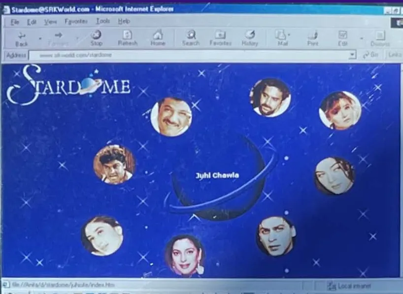
"Stardome", the stars' section.
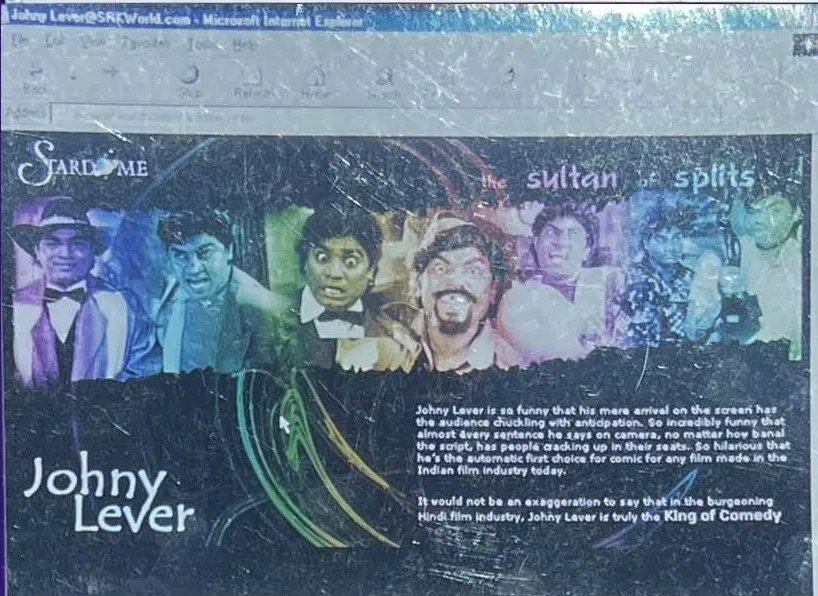
"Stardome": Johny Lever.
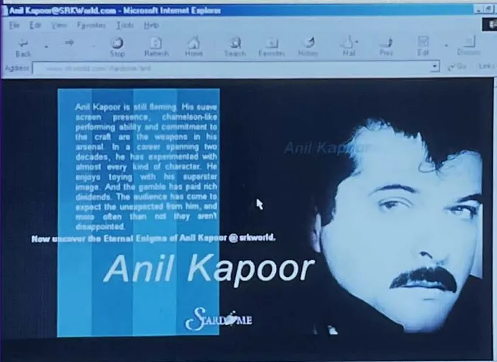
"Stardome": Anil Kapoor.
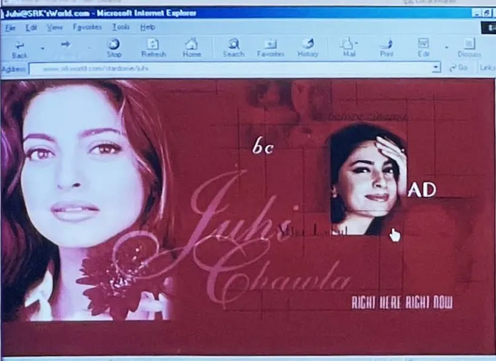
Juhi Chawla's page.
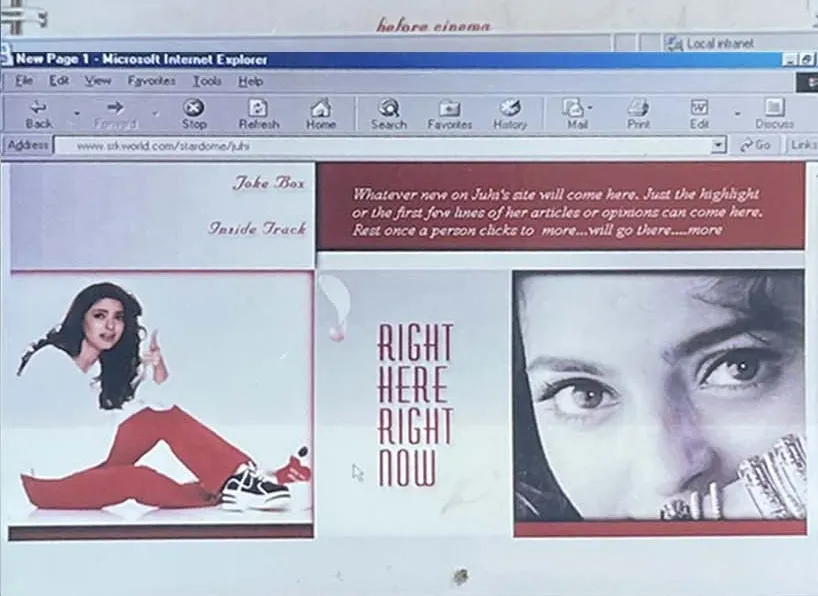
"Right Here Right Now".
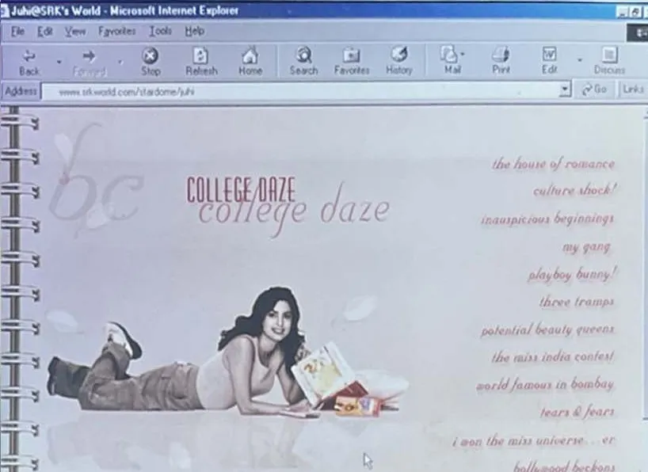
"College Daze".
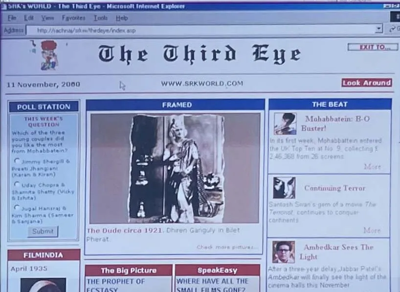
"The Third Eye", the news page, dated 11 November 2000.
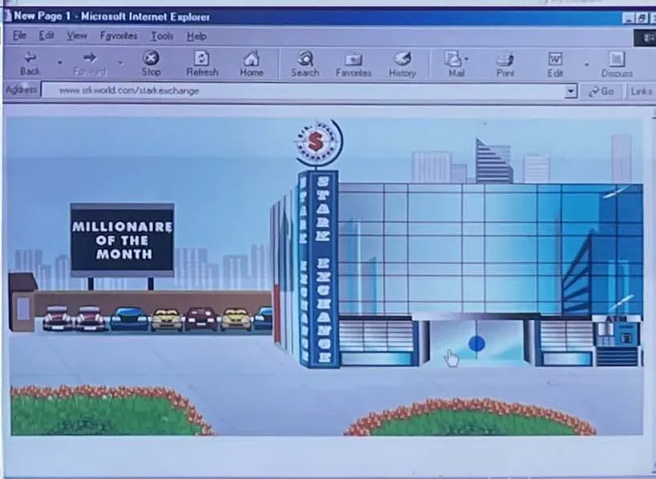
"Stark Exchange", with its Millionaire of the Month.
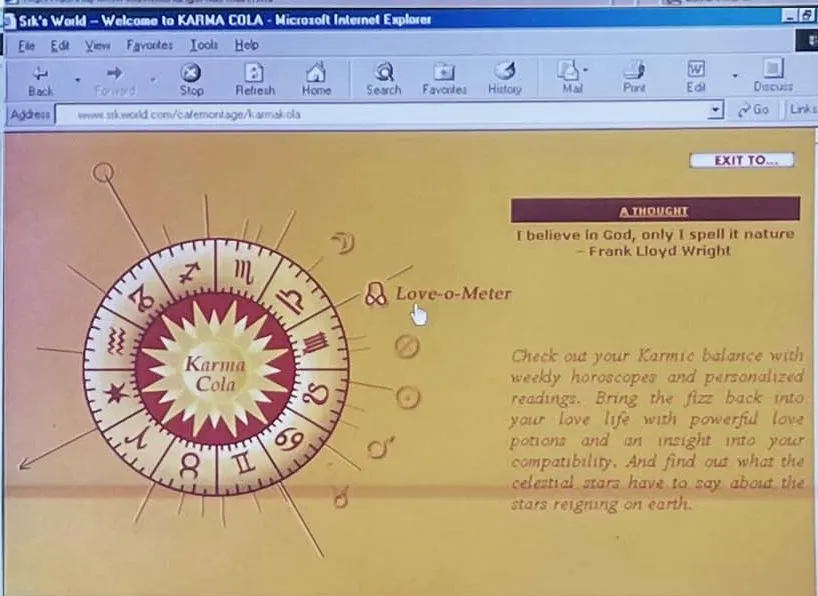
"Karma Cola", horoscopes and the Love-o-Meter.
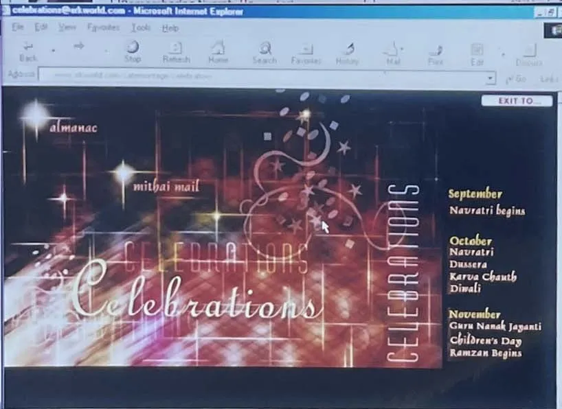
"Celebrations", the festival calendar.
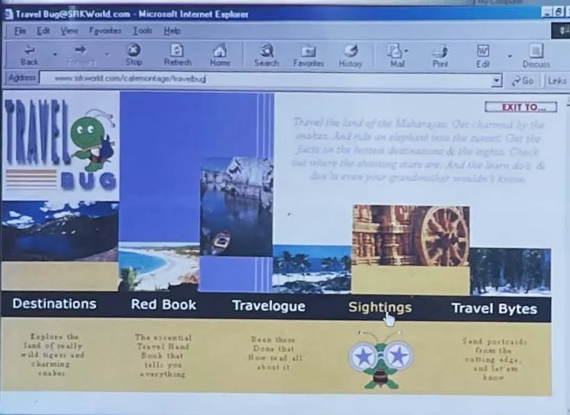
"Travel Bug": Destinations, Red Book, Travelogue, Sightings, Travel Bytes.
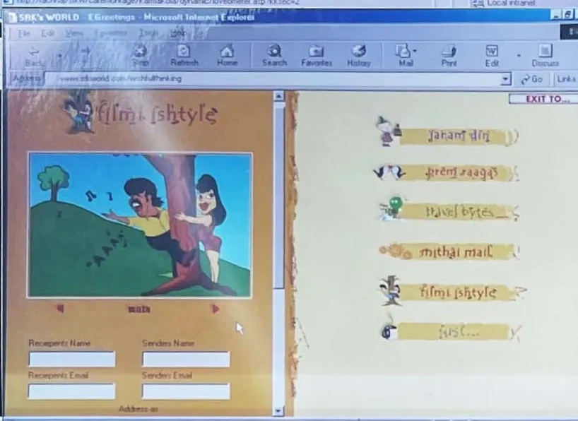
"Filmi Style" e-greetings.
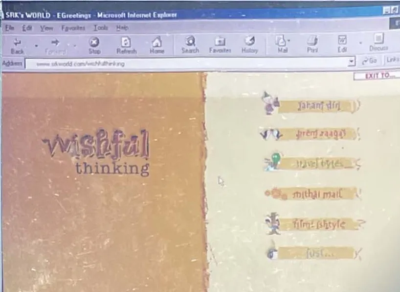
"Wishful Thinking" e-greetings.
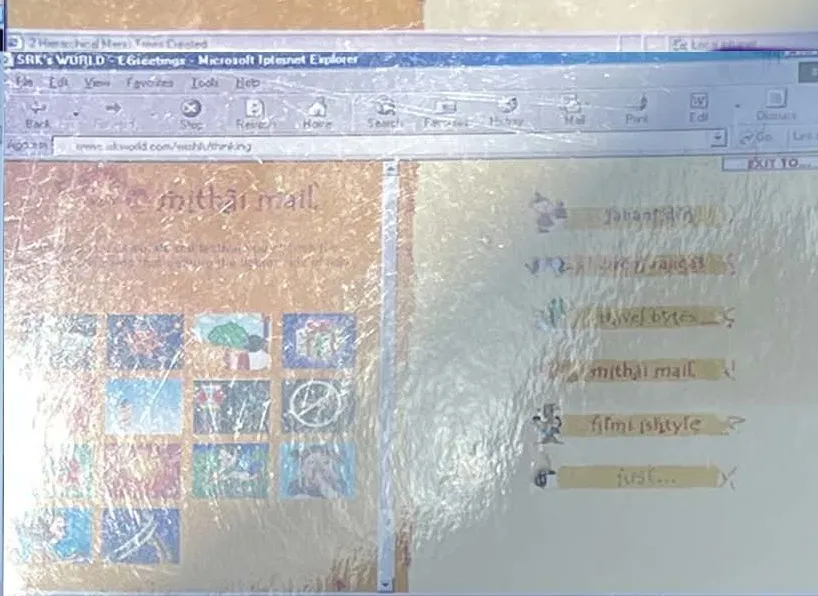
"Mithai Mail" e-greetings.